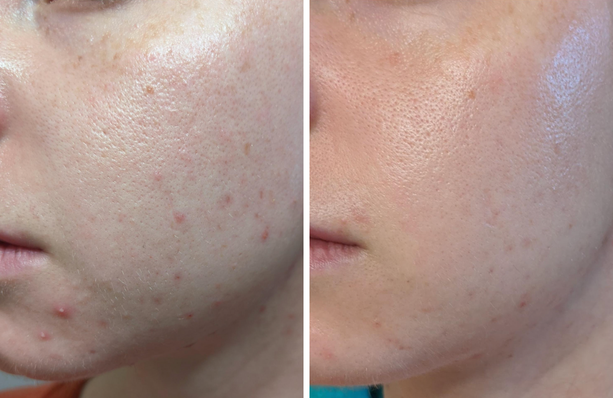
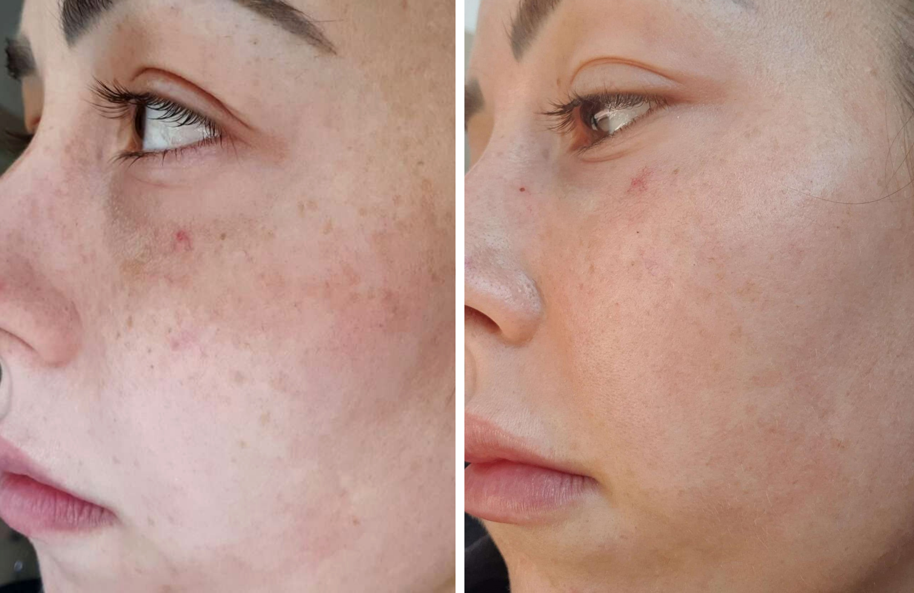
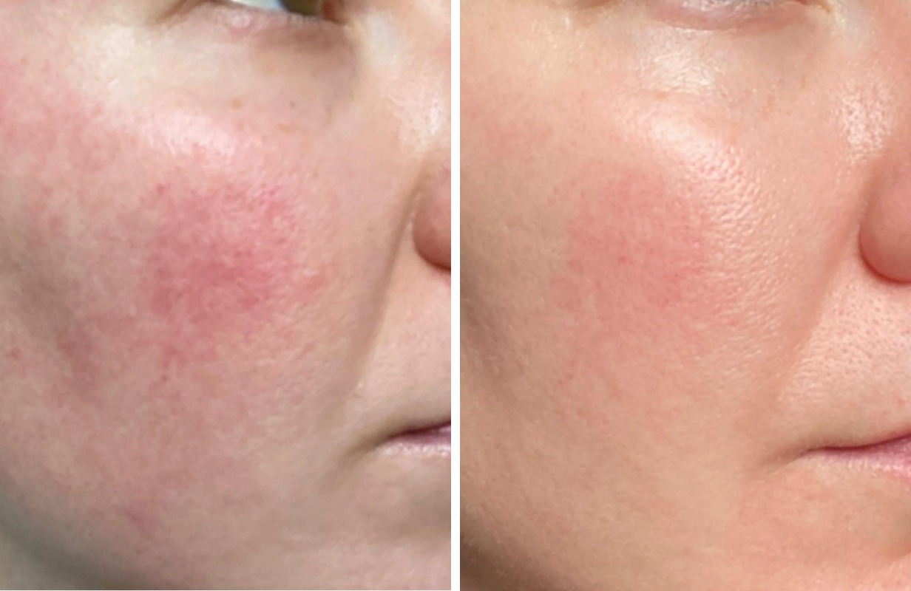

Collagen is vital to skin health and beauty. The collagen-boosting effects seen from red light therapy are the foundation of its most talked about benefits: wrinkle-fighting and anti-aging.
Effectively reduce the depth of fine lines
Improves skin firmness
Combats signs of ageing and wrinkles
Give you visibly healthier, smoother, younger-looking skin

After 4 weeks
It’s easy to believe acne and breakouts happen because you’re doing something wrong. But you’re not: skin blemishes happen when hair follicles are blocked with dead skin, bacteria, and oil
Q-Rejuvalight Pro Facewear goes deeper than any topical cream can go on its own to tackle acne at its root by:
Effectively reduce the depth of fine lines
Regulating oil production
Reducing redness and inflammation
Preventing future flare-ups
Fading post-breakout marks

After 10 weeks
Unwanted spots or patches of skin being darker than other areas. For dark spots, scars, or discoloration usually takes months, even years to fade from your face. Especially by just using topicals. Qure's Light therapy activates your skin’s natural healing process to:
Help your skin cells heal and rejuvenate naturally.
Breaks down deposits of melanin so your skin heals to its normal pigment levels
Reduces the appearance of dark spots and hyperpigmentation, including scars
Give you visibly healthier, smoother, younger-looking skin
Leaves you witheven-toned and refreshed-looking skin

After 12 weeks
Inflammation can wreak havoc on skin health and appearance. Trying multiple topical creams that work only on the surface level can leave you feeling frustrated. Non-invasive, natural and painless light therapy heals the skin from the inside out to:
Reduce inflammation by increasing blood flow and circulation to damaged tissues
Strengthen the skin’s barrier
Help skin cells and tissues regenerate and heal faster
Promote healthy cellular function to soothe and calm sensitive skin.